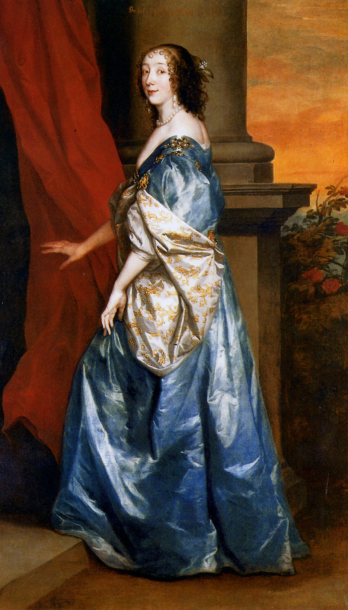

Van Dyck i Brytyjczycy
Anton van Dyck (1599-1641), choć z pochodzenia Flamand, stał się najznamienitszym malarzem siedemnastowiecznej Anglii. Jako nadworny artysta króla Karola I wywarł ogromny wpływ na kulturę dworską swej epoki, podobnie jak wcześniej Hans Holbein na dworze Henryka VIII.
Van Dyck urodził się i wykształcił w artystycznej Antwerpii. Po krótkiej wizycie w Londynie (1620-21) przeniósł się w roku 1632 na dwór Karola I. Niezwykle ambitny i pracowity, zdołał odrodzić angielskie malarstwo portretowe, pozostając aż do swej przedwczesnej śmierci w wieku 42 lat jego najsławniejszym przedstawicielem. Van Dyck sportretował wielu spośród luminarzy swej epoki, zaś jego ikoniczne portrety króla Karola I naznaczyły nasze wyobrażenia o monarchii Stuartów. Jego sztuka kompozycji odcisnęła piętno na przyszłych pokoleniach brytyjskich artystów.
Wystawa przygotowana przez londyńską Tate Gallery prezentuje niektóre z najznakomitszych dzieł, jakie van Dyck stworzył w czasie swego pobytu w Anglii. Ekspozycja odsłania również jego nieprzerwane dziedzictwo, widoczne w portretach tworzonych przez artystów późniejszych, od osiemnastego do dwudziestego wieku, m. in. Joshua Reynoldsa i Johna Singera Sargenta. Dzieła pokazywane na wystawie wypożyczono między innymi z The Royal Collection oraz The National Trust.
Van Dyck and Britain
Wystawa czynna od 18 lutego do 17 maja.